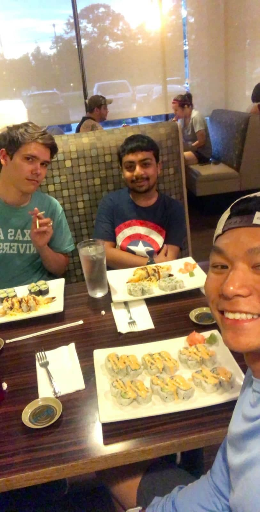
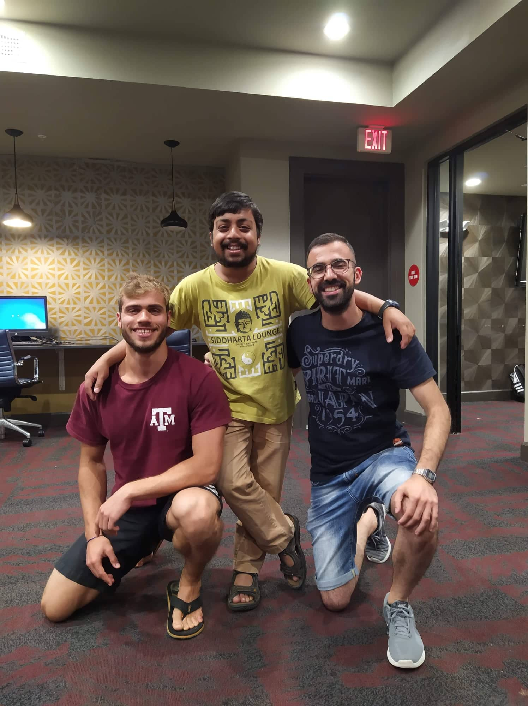
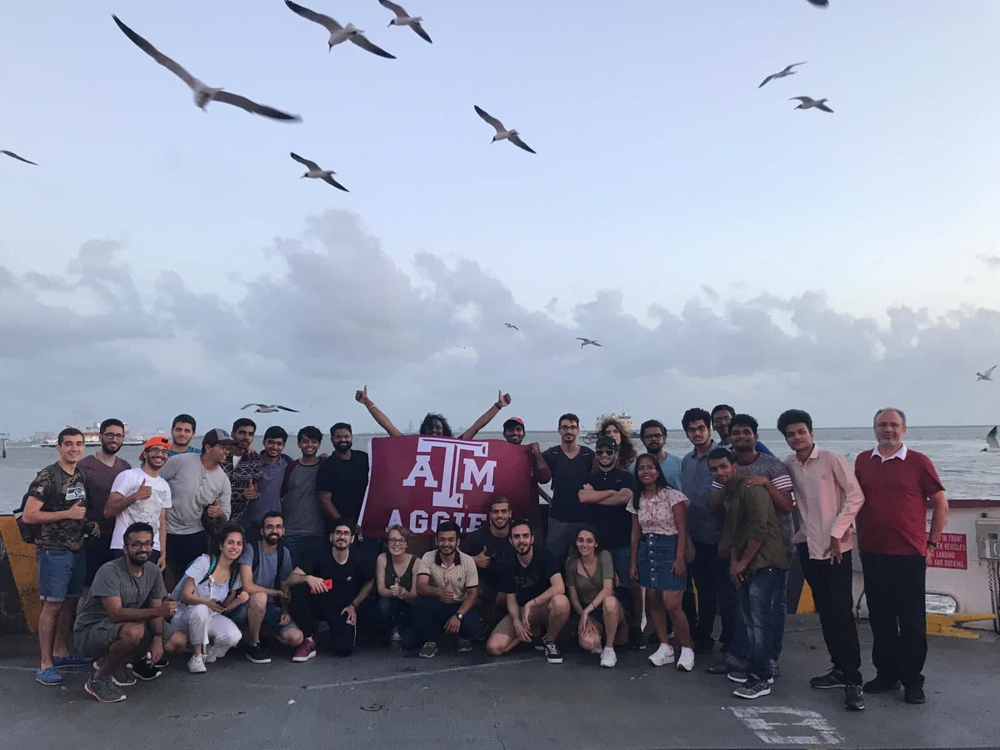

April 5, 2020
Standing at the cusp of the next step in my academic journey - going to grad school - I
can't help but look back often at the road that led me here. It doesn't help (or perhaps
it does, depending on your point of view) that a lot of my conversations now revolve
around internship or grad school applications. Somehow, I'm surrounded by people
interested in exploring or pursuing a career in academia. And with these thoughts fresh
in my mind, when the offer to write this article came my way, I jumped at the chance to
put them into words.
Before I go down this track, however, I believe I should start with a disclaimer. I have
been singularly lucky. The confusion that most students here go through - whether to
pursue an academic career or an industrial one - I managed to avoid entirely. Regardless
of the perks of a job, I've known that I wanted to go for research since before I
entered college. And even while applying for internships, I ran into one serendipitous
circumstance after another. But I'll get to that later.
Chronologically speaking, the first step in the process of looking for and applying for
an internship is figuring out what you want to do. The easy answer is to explore
everything. But while this approach has its merits, I find that undertaking the
necessary introspection to come up with a tentative idea of one's interests, and then
engaging with them, is a lot more rewarding. Usually, this is the hardest step, but I
knew my answer, and so could skip it.
Next comes the application process, which, for most (like me), starts in the fifth
semester. In many ways, this is the first real test of one's resolve. Since I knew that
I ultimately wanted to engage in research, I decided to pursue my other interests while
I had the chance. So I spent the preceding summer interning at the head office of The
Indian Express in Noida. It was an enriching experience, and I got a lot out of it and
thoroughly enjoyed myself. I was on a high when I came back and threw myself into the
application procedure with much gusto. The process itself was arduous, and the fact that
the fifth semester was by far my heaviest didn't make things easier. Juggling the
workload of the semester with trawling through possible projects in the Mitacs portal
and mailing faculty around the world in the hopes of being invited to their lab for the
upcoming summer took its toll. I barely left my room all semester, except to go to
classes, and ended up seriously neglecting my extracurricular commitments, especially my
duties as the Group Leader for the Anime Society. And even then, my SPI took a dip.
That semester I was met with nothing but rejections. I never heard from Mitacs, and as
is usual, none of the professors that replied to my mails had funding. This is why I
believe that it is vital to have a firm conviction in your decision to pursue an
academic internship. It's a long process and a lot of effort, and up till the point you
actually reach your lab, the gains are low. But, having also worked in an office
environment, I can say with a fair amount of confidence that for those who enjoy
research work, spending a summer at a lab is a joy like no other. You're your own boss,
and you get to work on actual problems and think of creative solutions. But I'm getting
ahead of myself.
Even though I was feeling a little disillusioned with the entire academic scene, I
already had a winter project lined up at IIT KGP, so I went there. It was a short but
thoroughly instructive project, and it solidified within me the desire to pursue a
career in academia. Personally, I feel that is what saved me. With a process like this,
it's dangerously easy to doubt yourself, so it's good to have experiences that can set
you straight again.

The sixth semester was a lot better for me. I had already done the bulk of the heavy
lifting for the application work, and I managed to settle into a comfortable groove with
my other commitments. My coursework was also less time consuming, and I could finally
engage with my extra-curricular responsibilities and interests again, which is essential
to feel human, in my opinion. This is also where my luck kicked back in. I applied and
was quickly shortlisted for the TAMU-IITK summer internship program. Around the same
time, I also got an invitation from another lab. Here, it is prudent to understand that
realistically, the chances of getting a funded offer from a lab abroad for the summer
are slim (though not impossible!), unless you have some personal connection with a
faculty at your target destination. This can be either direct or indirect through a
professor back home. The only other option, and the far more likely, is to be accepted
for an exchange program. For me, both my offers fell into one of the two categories. In
the end, because of the funding situation, I decided to go to TAMU, and boy was that a
good decision.
For a while, though, I regretted it. Although I was shortlisted early, I was nearly the
last person of the five who went with me to be matched with a supervisor. I was asked to
send three different lists of faculty members I would like to be mentored by, and after
a month and a half, I was matched with someone who wasn't even in my department. This
again turned out to be a lucky break, because it was Dr. JN Reddy who had accepted to
mentor me. Dr. Reddy is a stalwart in the field of applied mechanics (which is also my
area of interest), and perhaps more importantly, is an incredibly kind person. His Ph.D.
and PostDoc students, too, were very friendly.
(Another disclaimer is necessary here. My case with the TAMU application is a one-off.
People are almost always matched with mentors they choose, and when that is not
possible, both universities make sure that the applicant is paired with a mentor with
the same area of interest. Okay, moving on.)

I won't spend a lot of time discussing the experience at TAMU itself. Every research lab
is different, every city is different, and the people around you will be different.
There's just too much subjectivity for one person's research experience to mimic
another's. Instead, let me just quickly go over a few highlights outside of my research
work. Our flight was delayed, so on our first night there, we stayed at another Ph.D.
student's house, who was kind enough to spare us a room (by us I mean me and Anshul,
another Y16. We were on the same flight.). He cooked us dinner and even went to the
trouble of going to the store at 9 pm to buy Gobhi Parathas for us. He was a great help
to me throughout my stay as well, and we're still in touch. I also made friends with a
second-year student who worked at the university's HGEP office, which is the office that
funded our stay at TAMU.
In two months, we managed to go on a road trip, cook a couple of dinners together (he
loved cheese Maggi), have a board game night, and go watch Spiderman: Far From Home,
among other things. My roommates (I had two, both were American) were super chill, and
the roommates of some of the other interns were fun people too. There was also a group
of students from Cyprus who were a part of the same summer program, and they were just
the nicest people, so hanging out with them was great. All the boys from Cyprus had
served in the Military, and one of them was a tank operator, which was cool. I also got
to go on a mini-vacation to D.C. to meet my cousins just after my birthday and party.
Oh, and we went for a baseball game. Which was boring. So... nevermind.

All in all, I had an incredible time. The work was good, and the lab environment was
really open. My mentor was kind and took time out to not only guide me in my work there
but also to teach me some basic concepts and explain his ongoing research work to me,
which from what I hear is over and above the norm. The apartment we stayed at was super
comfortable, and I became good friends with my roommates. The university itself was
pretty and pretty big. And I had some great experiences both academically and otherwise.
My summer was everything I wanted it to be and more, and at the end of the day, isn't
that what's important?
P.S. Forgive the occasional wordiness of my sentences. I've been writing SOPs.